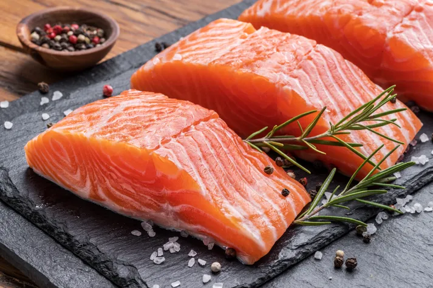
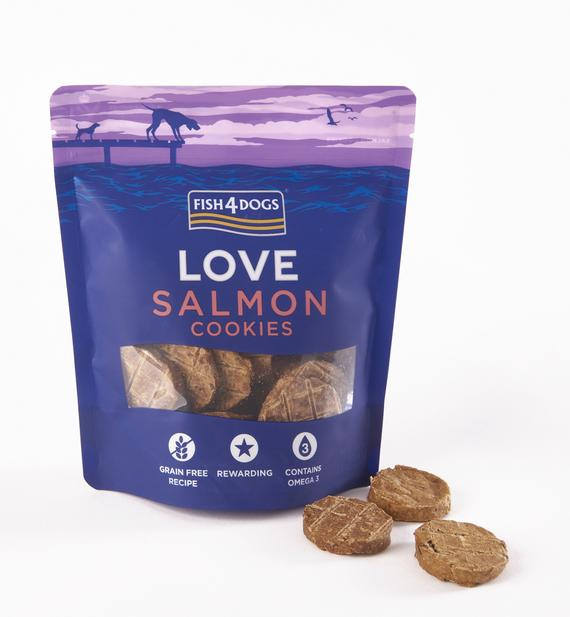
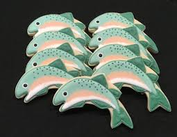
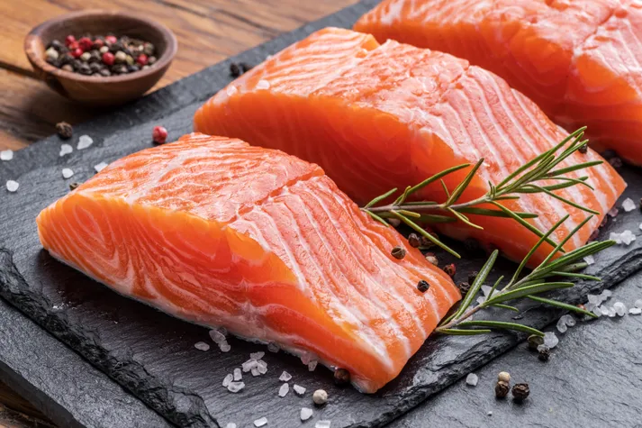
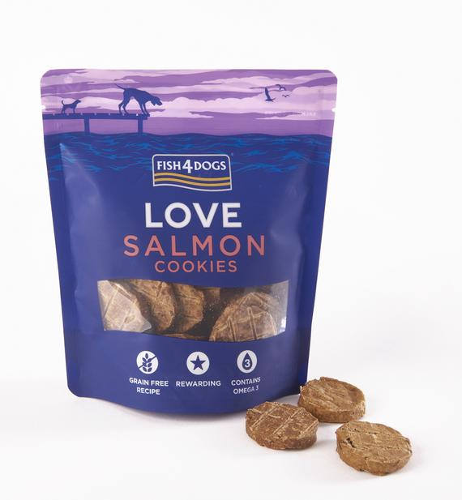
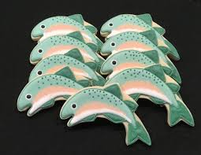

We're Open 24 Hours
Salmon are native to tributaries of the North Atlantic (genus Salmo) and Pacific Ocean (genus Oncorhynchus). Many species of salmon have been introduced into non-native environments such as the Great Lakes of North America and Patagonia in South America. Salmon are intensively farmed in many parts of the world.

 




